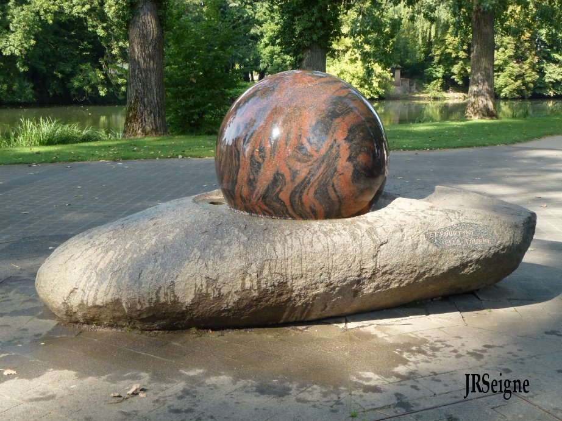
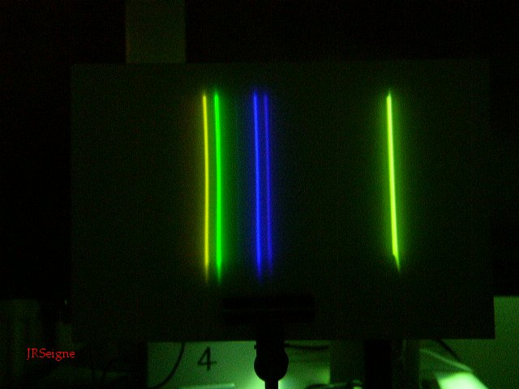

phpMyVisites | Open source web analytics
Sciences Physiques en MP*, Lycée Clemenceau Nantes |
|  |
La boule sphérique,
de diamètre
environ 1 m, en granit de Suède
repose sur un mince film d'eau (environ 0,1 mm) dans sa partie
inférieure. La surpression de l'eau par rapport à la pression
atmosphérique est d'environ 0,5 bar. Il suffit d'une surface un peu
inférieure à 1 m² pour que l'eau exerce alors une force qui compense le
poids de la
boule dont la masse est de 1300 kg. Le poids étant compensé, les
frottements sur le film
d'eau très réduits, la mise en mouvement de la boule est aisée. Une
fois mise en mouvement, elle y reste quelques minutes. Photographie
réalisée au Parc Scientifique du Près-la-Rose à Montbéliard (25). |
| Cette photographie
montre
la
décomposition de la lumière d'une lampe à vapeur de mercure. L'image de
la fente source non décomposée correspond à la trace verticale située à
droite. Sur la gauche, la lumière est décomposée en 4 raies principales
dont la plus intense est la raie verte à la longueur d'onde de 546,1nm.
L'observation des spectres de raies à la fin du 19ème siècle a été à
l'origine de la notion de niveau d'énergie dans l'atome, tout d'abord
dans le modèle de Bohr de l'atome d'hydrogène et plus tard lors du
développement de la mécanique quantique. |
 |
|
On se place en
lame d'air avec
l'interféromètre de Michelson. L'éclairage est réalisé par une lampe à
vapeur de mercure.On déplace le miroir mobile. Les anneaux
rentrent vers le centre, on se rapproche du contact optique.
|
Les anneaux
sortent de la figure, le déplacement du miroir l'éloigne du contact
optique. on éclaire toujours avec la lampe à vapeur de mercure.
|
|
On se place
toujours en
lame d'air avec
l'interféromètre de Michelson (lampe à vapeur de mercure). On déplace
le miroir mobile jusqu'à
atteindre puis dépasser le contact optique. On perçoit des
interférences en anneaux pendant une longue durée puis des teintes
relativement uniformes témoignant du voisinage et du passage par le
contact optique.
|
Ici,
l'interféromètre de Michelson est réglé en coin d'air et en lumière
blanche. Le
déplacement du miroir mobile entraîne un déplacement des franges. Les
franges ne sont perceptibles que pendant une courte durée du fait de la
largeur spectrale de la source de lumière blanche utilisée. La fonction
de contraste tend vite vers 0, il y a brouillage des système de franges.
|
|
On
est en à nouveau en coin d'air. On réduit la largeur spectrale de la
source en utilisant un filtre situé dans le vert d'une bande passante
de l'ordre d'une vingtaine de nanomètres. On observe les franges
rectilignes sur une durée nettement plus grande qu'en lumière blanche.
|
On
utilise, ici, un filtre travaillant dans le jaune toujours avec une
bande passante d'une vingtaine de nanomètres. L'interfrange dépend de
la longueur d'onde (un peu plus grand ici mais c'est difficile à
percevoir) mais la fonction de contraste va évoluer au même rythme que
dans le cas précédent.
|
| Cours | TD | Devoirs | TP | Oral | Etudiants MP* | Etudes documentaires |
Anciens | Accueil |